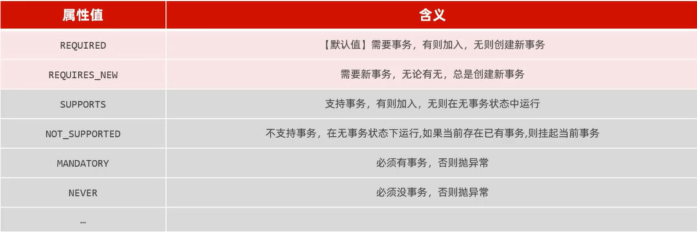
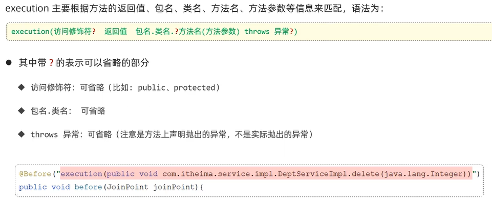

事务管理和AOP 1事务管理 1事物回顾 定义：一组操作的集合，不可分割的工作单位；
操作：1开启事务(操作开始前)start transaction /begin
2提交事务(操作全部完成后提交)commit
3回滚事务(操作时有异常，回滚)rollback
2Spring事物处理 1 2 3 4 5 6 7 8 9 10 @Override public void delete (Integer id) { deptMapper.delete(id); empMapper.deleteByDeptId(id); }
关于@Transactional注解
位置：业务service层的方法、类、接口上；
作用：将当前方法交给spring进行事务管理；方法执行前开启事务，执行完毕提交事务，出现异常回滚事务(一般在多步增删改)
1 2 logging.level.org.springframework.jdbc.support.JdbcTransactionManager = debug
3事务进阶 有关rollbackFor，默认只有出现Runtime Exception才会回滚，rollbackFor属性用于控制出现何种异常类型，进行回滚事务
(事务的传播行为，指一个事务方法被另一个事务方法调用时，这个事务应该如何进行事务控制)有关propagation，

具体了解REQUIRED、REQUIRES_NEW
由于日志需要记录所有情况，应将insert插入日志操作作为一个新的事务，这样就算是业务方法因为错误回滚也不会影响日志插入操作事务commit
1 2 3 4 5 6 7 8 9 10 11 12 @Service public class DeptLogServiceImpl implements DeptLogService { @Autowired private DeptLogMapper deptLogMapper; @Transactional(propagation = Propagation.REQUIRES_NEW) @Override public void insert (DeptLog deptLog) { deptLogMapper.insert(deptLog); } }
1 2 3 4 5 6 7 8 9 10 11 12 13 14 15 @Transactional(rollbackFor = Exception.class) @Override public void delete (Integer id) throws Exception { try { deptMapper.delete(id); if (true )throw new Exception ("出错了...." ); empMapper.deleteByDeptId(id); } finally { DeptLog deptLog = new DeptLog (); deptLog.setCreateTime(LocalDateTime.now()); deptLog.setDescription("执行了解散操作" ); deptLogService.insert(deptLog); } }
1 2 3 4 5 6 7 8 9 10 11 12 2024 -09-21 17 :00 :12.323 DEBUG 23664 --- [nio-8080 -exec-1 ] o.s.jdbc.support.JdbcTransactionManager : Initiating transaction commit2024 -09-21 17 :00 :12.325 DEBUG 23664 --- [nio-8080 -exec-1 ] o.s.jdbc.support.JdbcTransactionManager : Committing JDBC transaction on Connection [HikariProxyConnection@1270875261 wrapping com.mysql.cj.jdbc.ConnectionImpl@60c0c51f]2024 -09-21 17 :00 :12.329 DEBUG 23664 --- [nio-8080 -exec-1 ] o.s.jdbc.support.JdbcTransactionManager : Releasing JDBC Connection [HikariProxyConnection@1270875261 wrapping com.mysql.cj.jdbc.ConnectionImpl@60c0c51f] after transaction2024 -09-21 17 :00 :12.329 DEBUG 23664 --- [nio-8080 -exec-1 ] o.s.jdbc.support.JdbcTransactionManager : Resuming suspended transaction after completion of inner transactionTransaction synchronization resuming SqlSession [org.apache.ibatis.session.defaults.DefaultSqlSession@25933952 ] Transaction synchronization deregistering SqlSession [org.apache.ibatis.session.defaults.DefaultSqlSession@25933952 ] Transaction synchronization closing SqlSession [org.apache.ibatis.session.defaults.DefaultSqlSession@25933952 ] 2024 -09-21 17 :00 :12.330 DEBUG 23664 --- [nio-8080 -exec-1 ] o.s.jdbc.support.JdbcTransactionManager : Initiating transaction rollback2024 -09-21 17 :00 :12.330 DEBUG 23664 --- [nio-8080 -exec-1 ] o.s.jdbc.support.JdbcTransactionManager : Rolling back JDBC transaction on Connection [HikariProxyConnection@819996348 wrapping com.mysql.cj.jdbc.ConnectionImpl@424cd57c]2024 -09-21 17 :00 :12.332 DEBUG 23664 --- [nio-8080 -exec-1 ] o.s.jdbc.support.JdbcTransactionManager : Releasing JDBC Connection [HikariProxyConnection@819996348 wrapping com.mysql.cj.jdbc.ConnectionImpl@424cd57c] after transactionafterCompletion ... java.lang.Exception: 出错了....
2AOP基础 1引子 Aspect Oriented Programming ：面向切面编程，即面向特定方法编程
场景：案例部分功能运行较慢，定位执行耗时较长的业务方法，此时需要统计每一个业务方法的执行耗时；
实现：动态代理是面向切面编程最主流的的实现，而SpringAOP是Spring框架的高级技术，旨在管理bean对象的过程中，主要通过底层代码的动态代理机制，对特定的方法进行编程；
2快速入门-案例统计各个业务层方法执行耗时 导入依赖：在pom文件导入AOP依赖；
1 2 3 4 5 <dependency > <groupId > org.springframework.boot</groupId > <artifactId > spring-boot-starter-aop</artifactId > </dependency >
编写AOP程序：针对于特定方法根据业务需要进行编程
1 2 3 4 5 6 7 8 9 10 11 12 13 14 15 16 17 18 19 20 @Slf4j @Component @Aspect public class TimeAspect { @Around("execution(* com.itheima.service.*.*(..))") public Object recordTime (ProceedingJoinPoint joinPoint) throws Throwable { long begin = System.currentTimeMillis(); Object result = joinPoint.proceed(); long end = System.currentTimeMillis(); log.info(joinPoint.getSignature()+"方法执行耗时：{}" ,(end-begin)); return result; } }
使用场景：记录操作日志、权限控制、事务管理……
优势：代码无侵入、减少重复代码、提高开发效率、维护方便
3AOP核心概念 连接点：JoinPoint，可以被AOP控制的方法
通知：Advice，指那些重复的逻辑，也就是共性功能
切入点：PointCut，匹配连接点的条件
切面：Aspect，描述通知与切入点的对应关系(通知+切入点)
目标对象：Target，通知所应用的对象；
3AOP进阶 1通知类型 @Around：环绕通知，此注解标注的通知方法在目标方法前后都被执行
@Before：前置通知，在目标方法运行之前运行
@After：后置通知，一定会执行；
@AfterReturning：返回后通知，目标方法正常运行后通知被执行；有异常不执行
@AfterThrowing：异常后通知，目标方法异常后通知执行
2通知顺序 1一般顺序 有异常时顺序，@Around后半部分和@AfterReturning不会执行
1 2 3 4 5 6 2024 -09-21 19 :38 :23.273 INFO 7792 --- : around before ...2024 -09-21 19 :38 :23.274 INFO 7792 --- : before ...2024 -09-21 19 :38 :23.274 INFO 7792 --- : afterThrowing ...2024 -09-21 19 :38 :23.274 INFO 7792 --- : after ...2024 -09-21 19 :38 :23.292 ERROR 7792 --- [nio-8080 -exec-3 ] o.a.c.c.C.[.[.[/].[dispatcherServlet] : Servlet.service() for servlet [dispatcherServlet] in context with path [] threw exception [Request processing failed; nested exception is java.lang.ArithmeticException: / by zero] with root cause
无异常时顺序，除@AfterThrowing未执行，其他均正常执行
1 2 3 4 5 6 7 8 9 10 2024 -09-21 19 :43 :33.853 INFO 16020 --- : Initializing Servlet 'dispatcherServlet' 2024 -09-21 19 :43 :33.853 INFO 16020 --- : Completed initialization in 0 ms2024 -09-21 19 :43 :33.890 INFO 16020 --- : around before ...2024 -09-21 19 :43 :33.890 INFO 16020 --- : before ...Creating a new SqlSession Closing non transactional SqlSession [org.apache.ibatis.session.defaults.DefaultSqlSession@4424d45e] 2024 -09-21 19 :43 :34.310 INFO 16020 --- : afterReturning ...2024 -09-21 19 :43 :34.310 INFO 16020 --- : after ...2024 -09-21 19 :43 :34.310 INFO 16020 --- : around after ...
2复杂情况 当多个切面的切入点都匹配到了目标方法，目标方法运行时，多个通知方法都会被执行；
默认为字母顺序；也可以使用@Order(数字)指定执行顺序，数字越小越先执行
3切入点表达式 @Pointcut注解，可以复用的切点表达式；
1 2 3 4 5 6 7 @Pointcut("execution(* com.itheima.service.impl.DeptServiceImpl.*(..))") public void pt () {} @Before("pt()") public void before () { log.info("before ..." ); }
作用：主要用来决定项目中的那些方法需要加入通知
常用形式：
1execution 
2annotation注解 自定义注解，编写一个注解，加上两个注解，在需要切面的地方加上自定义注解
1 2 3 @Pointcut("@annotation(com.itheima.aop.MyLog)") private void pt () {}
1 2 3 4 5 6 7 8 9 10 import java.lang.annotation.ElementType;import java.lang.annotation.Retention;import java.lang.annotation.RetentionPolicy;import java.lang.annotation.Target;@Retention(RetentionPolicy.RUNTIME) @Target(ElementType.METHOD) public @interface MyLog {}
4连接点 指方法的执行；在Spring中用JoinPoint抽象了连接点，可以获得方法执行是的相关信息；对于@Around通知，只能使用ProceedingJoinPoint；而其他四种通知只能使用JoinPoint，他是ProceedingJoinPoint的父类型
JoinPoint是org.aspect.lang包下的
4AOP案例 将案例中增删改查相关接口的操作日志记录到数据库表中；
日志信息包括：操作人，操作时间，执行方法的全类名，执行方法名，方法运行时参数，返回值，方法执行时长；